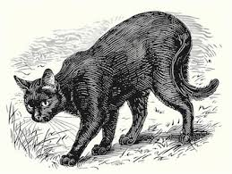

Gatos negros:
de símbolos sagrados a víctimas de la superstición
A lo largo de la historia, los gatos negros han sido rodeados por una aureola de misterio, superstición y simbolismo. En muchas culturas del mundo, estos animales han sido vistos tanto como portadores de buena fortuna como heraldos del infortunio. Sin embargo, la creencia más extendida, especialmente en Occidente, es que los gatos negros traen mala suerte. Esta superstición tiene raíces muy antiguas y está relacionada con la religión, la magia, la mitología y los cambios sociales ocurridos a lo largo de los siglos.
Los gatos, en general, fueron domesticados hace más de 4.000 años, y en el Antiguo Egipto se los veneraba como criaturas sagradas. La diosa Bastet, protectora del hogar y símbolo de la fertilidad y el amor, era representada con cabeza de gato, y a menudo con el pelaje negro. Matar a un gato en el Egipto faraónico era considerado un crimen grave, incluso castigado con la muerte. En esa época, el gato negro no representaba nada negativo, sino todo lo contrario: era un símbolo de protección y buena suerte.
Sin embargo, con el paso del tiempo y la expansión de las religiones monoteístas, el simbolismo del gato cambió radicalmente. En la Europa medieval, sobre todo durante la Edad Media, los gatos comenzaron a ser asociados con la brujería y el demonio. Este cambio de percepción se debió, en gran parte, al auge del cristianismo, que buscaba erradicar cualquier vestigio de antiguas creencias paganas. Como los gatos eran animales nocturnos, independientes y misteriosos, se los vinculó con las fuerzas oscuras. Su habilidad para moverse sigilosamente por la noche y sus ojos que brillaban en la oscuridad despertaban miedo y superstición en las poblaciones rurales, que carecían de explicaciones racionales para tales fenómenos.
El color negro también jugó un papel crucial en esta asociación negativa. En muchas culturas occidentales, el negro simboliza la muerte, la oscuridad y lo desconocido. Así, el gato negro, que combinaba estos dos elementos —su naturaleza misteriosa y su color—, se convirtió en un símbolo del mal y de la mala suerte. En los siglos XIII y XIV, durante los tiempos de la Inquisición, se creía que las brujas podían transformarse en gatos negros para pasar desapercibidas durante la noche y asistir a sus reuniones secretas. Incluso existía la creencia de que los gatos eran los “familiares” o espíritus asistentes de las brujas, ayudándolas a realizar sus hechizos y pactos con el diablo.
Durante la persecución de la brujería en Europa, miles de mujeres y gatos fueron asesinados debido a estas creencias. Paradójicamente, esto tuvo consecuencias imprevistas: al disminuir la población de gatos, las ratas proliferaron, lo que facilitó la propagación de la peste negra en el siglo XIV. De esta manera, una superstición basada en el miedo y la ignorancia contribuyó indirectamente a una de las peores epidemias de la historia humana.
Con la expansión europea hacia América, estas supersticiones viajaron al Nuevo Mundo. En los siglos XVII y XVIII, durante los juicios de brujas en lugares como Salem, en Estados Unidos, los gatos negros volvieron a ser considerados símbolos del mal. Si un gato negro se cruzaba en el camino de alguien, se decía que era un mal presagio o que el diablo estaba cerca. Esta idea persistió durante siglos y se integró profundamente en el folclore occidental.
Sin embargo, no todas las culturas compartieron esta visión negativa. En Escocia e Irlanda, por ejemplo, ver un gato negro podía considerarse un signo de prosperidad futura. En Japón, los gatos negros son símbolo de buena suerte y protección contra los malos espíritus. En la actualidad, en muchos lugares del mundo se intenta revertir la imagen negativa del gato negro, promoviendo su adopción y reconociendo que la superstición que los rodea carece de fundamento racional.
En conclusión, la superstición de que los gatos negros traen mala suerte es el resultado de una mezcla de miedos antiguos, interpretaciones religiosas y creencias culturales. Lo que alguna vez fue símbolo de protección y divinidad se transformó, por obra del miedo y la ignorancia, en un emblema del mal. Afortunadamente, hoy en día cada vez más personas comprenden que los gatos negros no son portadores de mala suerte, sino animales tan encantadores y valiosos como cualquier otro. Su historia nos recuerda cómo las creencias humanas pueden transformar la percepción de un ser inocente, y cómo el conocimiento y la empatía pueden ayudarnos a superar los prejuicios del pasado.